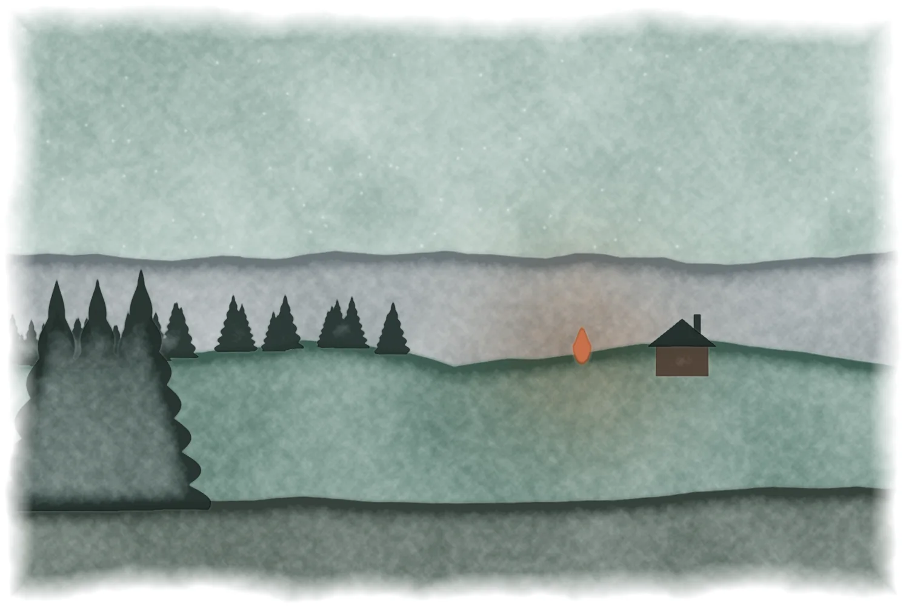
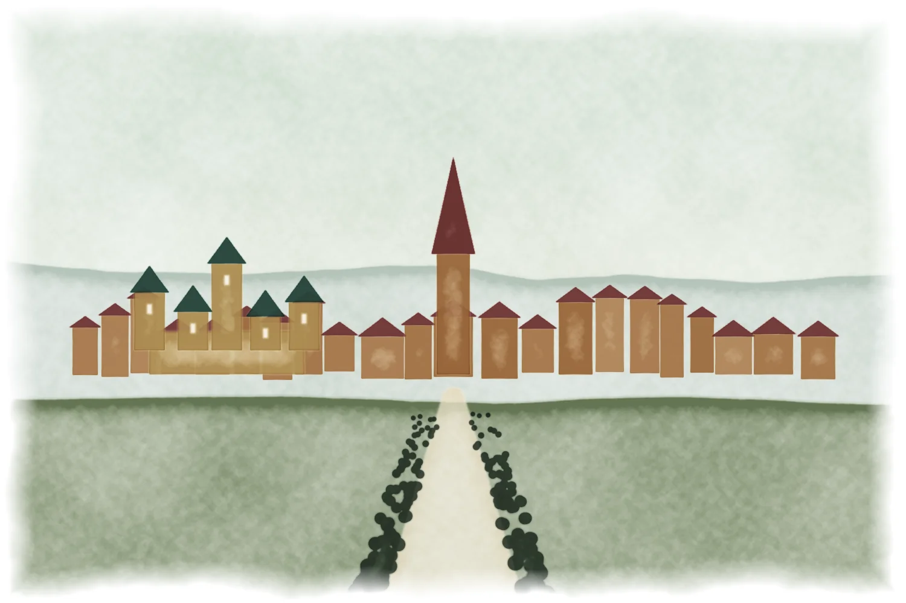
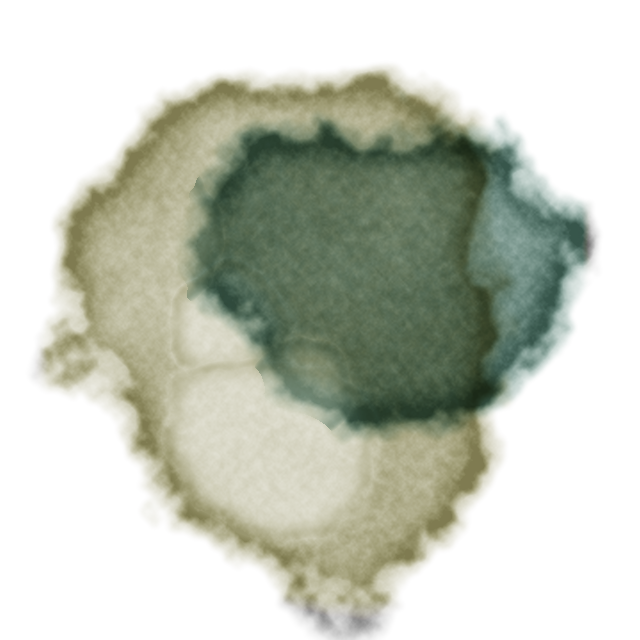

StoryBook
or, Old Tales Read Aloud

the best moment in the tale
“Now, lady, what is my name?”
The little man has come to take the queen's baby, sure she will never guess his name. He doesn't know a messenger heard him singing it in the woods.
The recording is being prepared.
Every tale here is performed by a full cast, each with a soundscape made for it alone: birdsong in the wood, rain on the castle roof, a fire in the hills. All of them are free. Pull the covers up and listen.
with tales from grimm · jacobs · andersen · poe · gibbon
Chapter the First · The Whole Tale, Free
Rumpelstiltskin
A miller boasts that his daughter can spin straw into gold, and the king locks her in with the straw. A little man appears. He can do it, for a price, and the price keeps rising.
The recording is being prepared.
— 1 —
when you're ready
A tale of your own
Everything on this page is free to hear. If you'd like a story made just for you, there are two ways, and you can hear a free sample of each first.

a story for your child
Your child, the hero
The clever third little pig, or the shoemaker's child who sees the elves: we write your child into the tale, give them a voice in the cast, add a dedication from you and end with a goodnight.
$6 a story, after a free preview

the studio
Your pages, performed
Upload your manuscript or a bedtime story you wrote. Every character gets a voice, with weather and music made for it.
from $9, priced by length, after a free opening
chapter the second
The Fairy Tales
Told by the firesides of Hesse and written down by the Brothers Grimm, gathered from English nurseries by Joseph Jacobs, or dreamed up in Copenhagen by a cobbler's son named Andersen. Each is cast with its own voices and painted with its own weather.
— 5 —
chapter the third
Tales for After Dark
For when the children are asleep: Poe's madmen and masked balls, and the night a gate in the walls of Rome opened from the inside.
— 31 —
afterword
Voices, Weather & Music
 the first
the first
A cast, not a reader
Every story is scripted like a radio play. The narrator, the wolf, the witch and the little man by the fire are each cast from the most natural voices available, at their own pitch, never processed into something they aren't. Pace and the room they speak in are directed line by line.
 the second
the second
Weather from noise
No sound is sampled. Birdsong, rain, embers, a spinning wheel and a frog's spring are synthesised from filtered noise and oscillators, then placed in rooms with convolution reverb, so each world sounds like itself.

the thirdA score that listens
Harp and strings, a music box playing Brahms, cello drones and a spectral waltz swell between scenes and duck under the voice whenever someone speaks. The finished mix is mastered to broadcast loudness.
The same craft can perform your own pages.
— 53 —